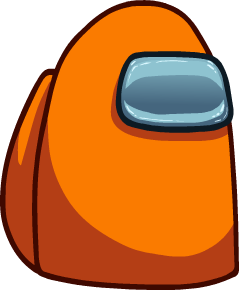
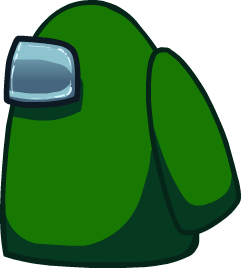
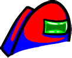

<!DOCTYPE html><html lang="es"><head><meta charset="utf-8"><meta name="viewport" content="width=device-width,initial-scale=1"><title>Among Us</title>
<script>
// index.html = la pantalla del juego: aquí mismo se vota (tocar tarjeta -> ✓/✕, como en la versión offline)
// index.html?ver = solo mirar (para el proyector: no vota y muestra el QR cuando el profesor lo activa)
var VER=/[?&]ver\b/.test(location.search);
document.title='Among Us';
</script>
<link rel="stylesheet" href="style.css">
</head>
<body>
<div id="root"></div><div id="qr" class="qrbox" style="display:none"></div>
<script src="https://www.gstatic.com/firebasejs/10.12.2/firebase-app-compat.js"></script>
<script src="https://www.gstatic.com/firebasejs/10.12.2/firebase-database-compat.js"></script>
<script src="https://cdnjs.cloudflare.com/ajax/libs/qrcodejs/1.0.0/qrcode.min.js"></script>
<script src="firebase-config.js"></script>
<script src="game.js"></script>
<script>
connect();
runGame(!VER);

/* Una sola pantalla de juego (tablet, reunión, conteo, expulsión).
   VOTE=true (normal): las tarjetas se tocan para votar, igual que en la versión offline:
   tocar tarjeta -> ✓ / ✕, y botón "Saltar voto". El profesor sigue controlando las fases.
   VOTE=false (?ver): solo mira, para el proyector. */
function runGame(VOTE){
  let vid=null;
  if(VOTE){
    $('#qr').remove();
    try{vid=localStorage.getItem('vid')}catch(e){}
    if(!vid){vid='v'+Math.random().toString(36).slice(2,10)+Date.now().toString(36);try{localStorage.setItem('vid',vid)}catch(e){}}
  }
  let G=null,sel=null,uiQR=false,tok=0,view='',tabKey='',lastKey='',lastState=null,first=true,expelledShown=false;
  const DISCUSS='<div class="discuss" id="dis" style="display:none"><div class="disc"><div class="circ"></div></div></div>';
  const BTN='<div class="btnc" data-act="ok">✓</div><div class="btnx" data-act="no">✕</div>';
  // ===== Sonidos (Web Audio: se decodifican al cargar y suenan al instante) =====
  const AC=window.AudioContext||window.webkitAudioContext;
  const actx=AC?new AC({latencyHint:'interactive'}):null;
  const BUF={},LIVE={};
  const SFX={vote:'sfx/among-us-vote-locking_01.mp3',meeting:'sfx/emergency-meeting.mp3',eject:'sfx/among-us-eject-sound-effect.mp3'};
  if(actx)Object.entries(SFX).forEach(([k,u])=>{
    fetch(u).then(r=>r.arrayBuffer()).then(b=>new Promise((ok,bad)=>actx.decodeAudioData(b,ok,bad))).then(d=>{BUF[k]=d}).catch(e=>console.warn('Audio',k,e));
  });
  function play(k){
    if(!actx||!BUF[k])return;
    const go=()=>{
      try{
        if(LIVE[k]){try{LIVE[k].stop()}catch(e){}}
        const s=actx.createBufferSource();s.buffer=BUF[k];s.connect(actx.destination);LIVE[k]=s;s.start(0);
      }catch(e){console.warn('Audio',k,e)}
    };
    if(actx.state==='running')return go();
    // si el navegador lo tenía dormido: despertarlo y sonar solo si es inmediato (no dejar sonidos "viejos" en cola)
    const t0=performance.now();
    actx.resume().then(()=>{if(performance.now()-t0<400)go()}).catch(e=>console.warn('Audio',k,e.name));
  }
  // los navegadores bloquean el audio hasta que haya un toque/clic en la página: el primero lo desbloquea
  function unlock(){if(actx&&actx.state!=='running')actx.resume().catch(()=>{})}
  ['pointerdown','mousedown','click','touchstart','touchend','keydown'].forEach(ev=>document.addEventListener(ev,unlock,{passive:true}));
  const votesCount=g=>g&&g.votes?Object.keys(g.votes).length:0;
  const myVote=()=>G&&G.votes&&G.votes[vid]!=null?G.votes[vid]:null;
  // Barra inferior de la tablet (igual que la offline: texto a la izquierda + "Saltar voto" a la derecha)
  const SKIPBTN=on=>`<button class="skip" ${on?'style="pointer-events:none"':'disabled'}>Saltar voto</button>`;
  const discussFoot=()=>'<span>Discusión en curso…</span>'+SKIPBTN(false);
  const waitFoot=()=>'<span>Esperando la próxima reunión…</span>';
  function votingFoot(){
    if(!VOTE)return `<span>Votación abierta · votos recibidos: ${votesCount(G)}</span>`+SKIPBTN(true);
    const my=myVote();
    if(!my&&sel==='skip')return '<span>Saltar el voto</span><div style="display:flex;gap:.8cqw"><div class="btnc" data-act="skipok">✓</div><div class="btnx" data-act="skipno">✕</div></div>';
    return `<span>${my?'Voto enviado':'Votación abierta'}</span><button class="skip" id="skip" ${my?'disabled':''}>${my==='skip'?'Voto saltado ✓':'Saltar voto'}</button>`;
  }
  async function show(html,t,ms=450){
    if(!first){document.body.style.transitionDuration=ms+'ms';document.body.classList.add('fadeout');await sleep(ms);if(t!==tok)return false}
    first=false;$('#root').innerHTML=html;document.body.classList.remove('fadeout');
    setTimeout(()=>{document.body.style.transitionDuration=''},ms+50);return true;
  }
  const setFoot=h=>{const f=$('#foot');if(f)f.innerHTML=h};
  const effList=eff=>plist(G).map(p=>({...p,alive:p.alive||(eff&&G.result&&G.result.ejected===p.id)}));
  async function showTablet(t,eff,foot,extra=''){
    const list=effList(eff),key=JSON.stringify(list.map(p=>[p.id,p.alive,p.skin,p.name]));
    if(view==='tablet'&&key===tabKey&&!extra){const d=$('#dis');if(d)d.remove();setFoot(foot);return true}
    if(!await show(`<div class="stage">${tabletHTML(list,extra)}</div>`,t))return false;
    view='tablet';tabKey=key;setFoot(foot);return true;
  }
  // ===== Votar (solo celular) =====
  function clearSel(){sel=null;document.querySelectorAll('.card.sel').forEach(c=>{c.classList.remove('sel');const s=c.querySelector('.slot');if(s)s.innerHTML=''})}
  function resetVoteUI(){
    clearSel();
    const g=$('.grid');if(!g)return;
    g.classList.remove('active');
    g.querySelectorAll('.card.mine').forEach(c=>{c.classList.remove('mine');c.querySelector('.slot').innerHTML=''});
  }
  function applyVote(){
    const g=$('.grid');if(!VOTE||!g||!G||G.phase!=='voting')return;
    const my=myVote();
    g.querySelectorAll('.card.mine').forEach(c=>{c.classList.remove('mine');c.querySelector('.slot').innerHTML=''});
    if(my){
      clearSel();g.classList.remove('active');
      if(my!=='skip'){const c=g.querySelector(`[data-id="${my}"]`);if(c){c.classList.add('mine');c.querySelector('.slot').innerHTML='<div class="mark">✓</div>'}}
    }else g.classList.add('active');
  }
  function cast(target){
    sel=null;play('vote');
    db.ref('game/votes/'+vid).transaction(cur=>cur==null?target:undefined);
  }
  if(VOTE)document.addEventListener('click',e=>{
    if(!G||G.phase!=='voting'||myVote()!==null)return;
    if(e.target.closest('#skip')){clearSel();sel='skip';return setFoot(votingFoot())}
    const sk=e.target.closest('[data-act="skipok"],[data-act="skipno"]');
    if(sk){const ok=sk.dataset.act==='skipok';sel=null;if(ok)return cast('skip');return setFoot(votingFoot())}
    const card=e.target.closest('.card');
    if(!card||card.classList.contains('dead')||!card.closest('.grid.active'))return;
    const act=e.target.closest('[data-act]'),id=card.dataset.id;
    if(act&&act.dataset.act==='ok')return cast(id);
    if(act&&act.dataset.act==='no'){clearSel();return setFoot(votingFoot())}
    clearSel();sel=id;card.classList.add('sel');card.querySelector('.slot').innerHTML=BTN;
    setFoot(votingFoot());
  });
  // ===== QR para que entren a votar (solo proyector) =====
  let qrDone=false;
  function renderQR(){
    if(VOTE)return;
    const box=$('#qr'),want=uiQR||!G;
    box.style.display=want?'block':'none';
    if(want&&!qrDone){
      const u=new URL(location.href);u.search='';u.hash='';
      const link=u.href;
      box.innerHTML='<div class="qrimg" id="qrimg"></div><small>'+esc(link)+'</small>';
      try{new QRCode($('#qrimg'),{text:link,width:180,height:180})}catch(e){}
      qrDone=true;
    }
  }
  // Si hay muchos jugadores la lista hace scroll: durante el conteo sigue a la tarjeta activa
  function reveal(card){
    const g=$('.grid');if(!g||!card)return;
    const gr=g.getBoundingClientRect(),cr=card.getBoundingClientRect();
    if(cr.top<gr.top||cr.bottom>gr.bottom)g.scrollTo({top:g.scrollTop+cr.top-gr.top-(gr.height-cr.height)/2,behavior:'smooth'});
  }
  // ===== Flujos =====
  async function idleFlow(t){
    if(await show('<div class="stage"><div class="idle">Esperando que el profesor cree una ronda…</div></div>',t))view='idle';
  }
  async function meetingFlow(t,animate){
    if(!animate){await showTablet(t,false,discussFoot());return}
    const scene='<div class="stage"><div class="scene"><div class="pos"></div></div></div>';
    play('meeting');if(!await show(scene,t,150))return;view='emergency';
    await sleep(1600);if(t!==tok)return;
    if(!await showTablet(t,false,discussFoot(),DISCUSS))return;
    await sleep(700);if(t!==tok)return;
    const d=$('#dis');if(!d)return;d.style.display='grid';
    await sleep(2300);if(t!==tok)return;
    d.classList.add('out');await sleep(600);if(t===tok&&$('#dis'))$('#dis').remove();
  }
  async function countFlow(t){
    if(!await showTablet(t,!expelledShown,'<span id="msg">Contando votos…</span><div class="skipbar" id="skipbar"></div>'))return;
    setFoot('<span id="msg">Contando votos…</span><div class="skipbar" id="skipbar"></div>');
    document.querySelectorAll('.slot').forEach(s=>{s.innerHTML='';s.classList.remove('dense')});
    document.querySelectorAll('.card.win,.card.mine').forEach(c=>c.classList.remove('win','mine'));
    await sleep(1000);if(t!==tok)return;
    if($('.grid'))$('.grid').scrollTop=0;
    const grid=$('.grid'),votes=shuffle(Object.values(G.votes||{})),delay=750;
    for(const v of votes){
      if(t!==tok)return;
      if(v==='skip'){$('#skipbar').insertAdjacentHTML('beforeend',anon());$('#msg').textContent='Votos saltados:'}
      else{const s=grid.querySelector(`[data-id="${v}"] .slot`);if(s){s.insertAdjacentHTML('beforeend',`<div class="voter">${anon()}</div>`);if(s.children.length>4)s.classList.add('dense');reveal(s.closest('.card'))}}
      await sleep(delay);
    }
    const r=G.result||{},ej=r.ejected&&G.players[r.ejected];
    if(ej){const c=grid.querySelector(`[data-id="${r.ejected}"]`);if(c){c.classList.add('win');reveal(c)}$('#msg').textContent=ej.name+' fue el más votado'}
    else $('#msg').textContent=r.motivo==='empate'?'Empate':'Se saltó la votación';
    await sleep(2800);if(t!==tok)return;
    expulsionFlow(t);
  }
  async function type(el,txt,ms,t){for(const ch of txt){if(t!==tok)return false;el.textContent+=ch;await sleep(ms)}return true}
  async function expulsionFlow(t){
    const r=G.result||{},ej=r.ejected&&G.players[r.ejected];
    const html='<div class="space"></div>'+(ej?`<div id="fly"><div class="flyer">${body(ej)}</div></div>`:'')+'<div class="msg"><p id="l1"></p><p id="l2"></p></div><div class="end" id="end"></div>';
    if(!await show(html,t))return;view='expulsion';play('eject');
    await sleep(1200);if(t!==tok)return;
    if(ej){
      if(!await type($('#l1'),ej.name,140,t))return;await sleep(900);if(t!==tok)return;
      const art=(r.impostorsTotal||1)>1?'un':'el';
      if(!await type($('#l1'),r.wasImpostor?` era ${art} impostor.`:` no era ${art} impostor.`,70,t))return;
    }else if(!await type($('#l1'),r.motivo==='empate'?'Nadie fue expulsado (empate).':'Nadie fue expulsado (se saltó la votación).',60,t))return;
    await sleep(1200);if(t!==tok)return;
    const left=r.impostorsLeft==null?1:r.impostorsLeft;
    $('#l2').textContent=left===0?'No quedan impostores.':left===1?'Queda 1 impostor.':`Quedan ${left} impostores.`;$('#l2').classList.add('show');
    await sleep(2200);if(t!==tok)return;
    if(r.fin){
      const names=r.impostorNames||(r.impostorName?[r.impostorName]:[]),many=names.length>1;
      const lst=a=>a.length<2?a.join(''):a.slice(0,-1).join(', ')+' y '+a[a.length-1];
      const w=r.fin==='tripulacion'?'¡Victoria de la tripulación!':(many?'¡Victoria de los impostores!':'¡Victoria del impostor!');
      $('#end').innerHTML=`<h2>${w}</h2>`+(names.length?`<p>${many?'Los impostores eran ':'El impostor era '}${esc(lst(names))}</p>`:'');$('#end').classList.add('show');
    }else{
      await sleep(2500);if(t!==tok)return;
      expelledShown=true;
      await showTablet(t,false,waitFoot());
    }
  }
  // ===== Reacción a la base de datos (el profesor controla las fases) =====
  function handle(){
    const phase=G&&G.players?G.phase:null,key=phase?`${G.round}|${G.meeting}|${phase}`:'none';
    renderQR();
    if(key===lastKey){
      if(phase==='voting'&&view==='tablet'){setFoot(votingFoot());applyVote()}
      return;
    }
    const was=lastState;lastKey=key;lastState=phase?{round:G.round,meeting:G.meeting,phase}:null;
    const t=++tok;
    if(VOTE)resetVoteUI();
    if(!phase){view='';tabKey='';return void idleFlow(t)}
    if(phase==='wait'){expelledShown=false;showTablet(t,false,waitFoot())}
    else if(phase==='meeting')meetingFlow(t,!!(was&&was.phase==='wait'&&was.round===G.round));
    else if(phase==='voting')showTablet(t,false,votingFoot()).then(ok=>{if(ok&&t===tok)applyVote()});
    else if(phase==='count'){expelledShown=false;countFlow(t)}
  }
  db.ref('game').on('value',s=>{G=s.val();handle()});
  if(!VOTE)db.ref('ui/qr').on('value',s=>{uiQR=!!s.val();renderQR()});
}
</script>
</body></html>
